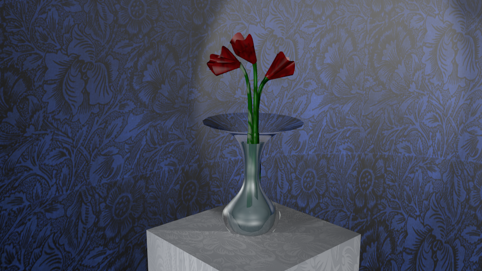

Navigation
Home

Musical Theater
Musical Theater was when I was back in High school. I was a performer in two plays, a flower in "Alice of Wonderland", and Dorothy Gale in "Wizard of OZ".
It was one of the best group efforts I have ever participated in and will always hold a place in my heart. Our performance can be viewed here:
Part 1andPart 2

Roller Skating
I only started skating a few years ago and have loved doing it! It's scary of course, and I have fallen repeatedly, but it's still fun just the same.
Since last year though, I have started to slow down. While the whole family was skating on my birthday, my mother fell and broke her wrist, making my dad
cautious of the sport.

Tennis
As my mom would put it "It's for the exercise!"......Yeah exercise. I have been playing tennis since I was four and have even
gone to state my junior year. It was a big deal since I was the only one in my district who wasn't from Corvallis. The year before state I dislocated my shoulder while hitting an overhead.
Since then I have retired from the courts and only play every now and then.

Art and Animation
Before High school I only sketched outlines of characters and flowers, but my first Computer Science teacher, Mr. Helland, taught me almost
everything important to use a program called Blender. I then began to create pictures and videos using objects and physics. Mr. Helland than introduced me to another program called Unity, where I
first learned to program in C#. About three months later I started to program in Java for the first time and fell in love with creating art with GUI.